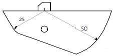
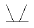
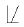
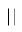
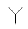
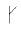
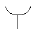
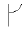
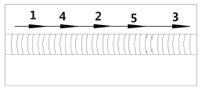
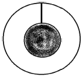

초음파비파괴검사기사(구) (2013-03-10 기출문제)
1과목: 초음파탐상시험원리
1. 다음 중 액체 내에 존재하는 파의 진동 형태는?
- 종파
- 횡파
- 표면파
- 판파
(정답률: 알수없음)

2. 초음파탐상 시 주파수 선택에 고려할 점으로 잘못된 것은?
- 감쇠가 클 경우에는 낮은 주파수가 좋다.
- 낮은 주파수 쪽이 분해능이 좋고 작은 결함의 검출에 적합하다.
- 주파수가 높은 쪽이 결함의 크기를 정하는 데 정밀도가 높다.
- 주파수가 높은 쪽이 지향성이 좋다.
(정답률: 알수없음)
3. 주어진 재질 내에서 판파의 속도를 결정하는 요소 중 가장 거리가 먼 것은?
- 진동자의 크기
- 판의 두께
- 주파수
- 파의 입사각도
(정답률: 알수없음)
4. 초음파가 다른 매질의 경계에 어떤 각도로 입사할 때 제 2매질내 음파의 진행방향을 정하는 굴절각은 무엇에 의해서 결정되는가?
- 초음파의 진동수
- 초음파의 파장
- 초음파의 강도
- 초음파 음속
(정답률: 알수없음)
5. 비접촉식 초음파탐상시험 방법에 해당되지 않는 것은?
- 레이저-초음파법(laser-ultrasonics)
- 공기 결합 초음파탐촉자법(air-coupled transducer)
- 유도초음파법(guided, lamb wave)
- 전자초음파탐상법(EMAT)
(정답률: 알수없음)
6. 아크릴에서 철강으로 종파가 굴절될 때 종파의 임계각은?
- 22.5°
- 17.80°
- 220°
- 23.90°
(정답률: 알수없음)
7. 초음파탐상시험에서 초음파가 경계면에 경사각으로 입사하여 기체의 경계면에 도달하였을 경우 반사되는 초음파의 종류는?
- 종파
- 횡파
- 판파
- 표면파
(정답률: 알수없음)
8. 가열양극 할로겐법의 특성을 설명한 것 중 옳은 것은?
- 대기압하에서 작업할 수 없다.
- 할로겐 추적가스에만 응답할 수 있다.
- 기름에 막혀 있는 누설은 검출할 수 없다.
- 할로겐 추적가스에 장시간 노출되어도 누설신호가 사라지지 않는다.
(정답률: 알수없음)
9. 육안검사에 대한 설명으로 틀린 것은?
- 표면은 깨끗해야 한다.
- 사용 중 검사가 가능하다.
- 표면 결함만 검출이 가능하다.
- 표면 및 표면하 결함 검출이 가능하다.
(정답률: 알수없음)
10. 다음 중 누설검사를 하는 이유가 아닌 것은?
- 표면의 불연속을 검출하기 위해
- 표준에서 벗어난 누설률과 부적절한 제품을 검출하기 위해
- 시스템 작동에 방해되는 재료의 누설손실을 방지하기 위해
- 돌발적인 누설에 기인하는 유해한 환경적인 요소를 방지하기 위해
(정답률: 알수없음)
11. 자분 분산매가 가져야 할 특성에 대한 설명 중 옳은 것은?
- 휘발성이 크고, 점도는 낮아야 한다.
- 점도가 낮고, 장기간 변질이 없어야 한다.
- 인화점이 낮고, 인체에 유해하지 않아야 한다.
- 적심성은 나쁘며, 결함에서 활발한 화학반응이 일어나야 한다.
(정답률: 알수없음)
12. 와류탐상검사에 관한 설명으로 틀린 것은?
- 관통형 코일을 보빈코일이라고 한다.
- 내삽형 프로브는 관의 내면검사에 유리하다.
- 프로브형 코일은 표면 결함 탐상에 쓰인다.
- 자기 비교 코일은 선 또는 관재의 시험체에 이용한다.
(정답률: 알수없음)
13. 철강재를 용접하여 일정 시간 경과 후 표면 및 표면직하의 결함 검출에 경제적이고 손쉬운 비파괴검사법은?
- 음향방출시험
- 초음파탐상시험
- 자분탐상시험
- 방사선투과시험
(정답률: 알수없음)
14. 비파괴검사법 중 검사속도가 빠르고 자동화가 쉬우며, 전도체의 표면 결함 검출에 감도가 우수한 것은 ?
- 누설검사
- 초음파탐상시험
- 와전류탐상시험
- 방사선투과시험
(정답률: 알수없음)
15. 다음 중 비파괴시험적인 요소를 포함하고 있는 것은?
- 경도시험
- 굽힘시험
- 충격시험
- 인장시험
(정답률: 알수없음)
16. 일반적으로 검사 후 결함의 크기 및 형상을 장기적으로 보전하기 적합하여 많이 사용되는 비파괴검사법은?
- 누설시험
- 자분탐상시험
- 방사선투과시험
- 침투탐상시험
(정답률: 알수없음)
17. 비파괴시험 원리와 그에 따라 비파괴시험 방법이 틀린 것은?
- 모세관 현상 이용 - 침투탐상검사
- 적외선 에너지 변화 이용 - 중성자투과검사
- 유체 흐름, 압력차 이용 - 누설검사
- 음파의 진행과 반사 - 초음파탐상검사
(정답률: 알수없음)
18. 중성자투과시험에 이용되는 중성자 빔의 발생원과 거리가 먼것은?
- 원자로
- 입자가속기
- X선 발생기
- 방사성 동위원소
(정답률: 알수없음)
19. 침투탐상시험 중 가장 탐상 감도가 우수한 것은?
- 용제성 염색침투탐상
- 용제성 형광침투탐상
- 후유화성 염색침투탐상
- 후유화성 형광침투탐상
(정답률: 알수없음)
20. 침투탐상검사의 적용 용도에 대한 설명으로 옳은 것은?
- 검사체에 존재하는 표면 잔류응력을 확인한다.
- 검사체의 표면에 존재하는 불연속을 검출한다.
- 검사체에 존재하는 이종 성분을 검출한다.
- 검사체에 존재하는 불연속의 크기, 깊이, 위치를 확인하고 평가한다.
(정답률: 알수없음)
2과목: 초음파탐상검사
21. 단강품의 수직탐상검사에서 저면 에코가 나타나지 않는 경우에 대한 방법으로 옳은 것은 어느 것인가?
- 분할형 탐촉자를 사용한다.
- 곡률 탐촉자를 사용한다.
- 시험 주파수를 더 높게 한다.
- 시험 주파수를 더 낮게 한다.
(정답률: 알수없음)
22. 다음 중 초음파탐상시험에서 강도와 침투능을 고려하여 시험자가 실제 조절할 수 있는 것으로 가장 중요한 요소는?
- 주파수
- 증폭도
- 속도
- 경도
(정답률: 알수없음)
23. 탐촉자의 진동자 크기보다 작거나 동일한 크기의 기공과 융합불량이 거리가 같은 곳에 있다면 일반적으로 스크린 상의 에코높이는 어떻게 표시되는가? (단, 음파는 결함에 수직방향으로 입사된다.)
- 기공의 에코가 융합불량 에코보다 높다.
- 융합불랴의 에코가 기공 에코보다 높다.
- 기공 에코와 융합불량 에코가 똑같이 나타난다.
- 융합불량 에코는 나타나지만 기공 에코는 나타나지 않는다.
(정답률: 알수없음)
24. 면적/증폭용 대비시험편에서 나오는 반사지시를 이용하여 탐상기기를 교정할 경우 이것은 무엇을 결정하기 위한 것인가?
- 수직 증폭 범위
- 펄스의 범위
- 분해능 범위
- 수평축 거리 범위
(정답률: 알수없음)
25. 초음파탐상검사에서 결함의 크기를 측정할 때에 정확성을 기하기 위해 고려하여야 할 사항으로 가장 거리가 먼 것은?
- 결함의 특성
- 시험체의 곡률
- 시험체의 용도
- 탐촉자 접근 한계성
(정답률: 알수없음)
26. 시험체 탐상면의 거칠기로 인해 강도와 분해능이 저하될 때 이를 개선하는 방법으로 가장 적합한 것은?
- 탐상기의 증폭기를 낮추어 사용한다.
- 고주파수 탐촉자를 사용한다.
- 초음파 출력이 높은 탐촉자를 사용한다.
- 산란파를 억제하기 위해 주사면 근처에 금속판을 놓아 사용한다.
(정답률: 알수없음)
27. 초음파 에코를 CRT 스크린이나 다른 기록 장치에 나타내는 B주사표시법에 해당하는 설명은?
- 수평축은 경과시간을 나타내고 수직축은 에코높이를 나타내는 방법이다.
- 시험체 내의 결함이 초음파 빔과 일직선상에 여러 개 있는 경우에는 각각 분리되어 나타난다.
- 초음파 빔과 탐촉자 주사방향에 수직으로 있는 결함은 넓이를 기록할 수 있다.
- 일반적으로 시험체의 저면측 결함이 표면 결함보다 길게 나타난다.
(정답률: 알수없음)
28. 초음파 탐상검사에 사용되는 탐촉자의 구성재료 중 초음파의 감쇠를 크게 하기 위하여 흡음재의 음향 임피던스를 조정하는 방법은?
- 흡음재의 두께를 조절한다.
- 진동자의 두께를 조절한다.
- 동조코일의 저항 값을 조절한다.
- 흡음재의 금속 분말과 플라스틱의 비율을 조절한다.
(정답률: 알수없음)
29. 다음 중 DAC에 대한 용어 설명이 맞는 것은 어느 것인가?
- 규격화된 모양, 치수의 구멍 약호
- 결함 에코높이의 최저 한계레벨
- 전자적으로 이루어지는 거리진폭보상의 약호
- 교정 눈금판 위에 표시된 에코높이의 범위
(정답률: 알수없음)
30. 다음 중 초음파를 발생시키지 않는 것은?
- 초음파 두께 측정기
- 초음파 경도계
- 초음파 세척기
- 초음파 탐상기
(정답률: 알수없음)
31. 결함 에코높이가 비교적 낮고 폭이 좁은 특성이 있으며, 진자 주사를 하거나 반대쪽에서 주사를 하여도 거의 일정한 펄스 강도를 나타냈다면 검출된 결함은?
- 균열
- 기공
- 융합불량
- 슬래그 혼입
(정답률: 알수없음)
32. 그림에 나타낸 시험편을 사용하여 시간축을 조정하는 경우 R50면을 향하여 음파를 전파하였을 때 두 번째로 나타나는 에코 위치는?

- 50mm
- 75mm
- 100mm
- 125mm
(정답률: 알수없음)
33. 주파수 범위가 넓은 광대역 탐촉자가 유용하게 사용될 수 있는 경우가 아닌 것은?
- 박판의 탐상이나 두께 측정
- 미소 결함으로부터 높은 에코를 얻고자 하는 경우
- 재료 조직의 영향으로 인한 노이즈가 심하게 발생하는 시험체의 검사
- 근거리 결함의 분리를 목적으로 하는 경우
(정답률: 알수없음)
34. 펄스반사법 초음파탐상장치를 사용하여 어떤 결함으로부터 에코높이가 눈금판 높이의 50%에 위치하였다. 이 에코높이를 눈금판의 100%로 조정하려면 어떻게 장비를 조정해야 하는가?
- 게인 조절기를 올린다.
- 게인 조절기를 내린다.
- 소인지연(sweep delay) 조절기를 올린다.
- 소인지연(sweep delay) 조절기를 내린다.
(정답률: 알수없음)
35. 배관의 원주 용접부를 경사각탐상으로 0.5 스킵 범위 내에서 검사하였을 때 검출하기 어려운 결함은? (단, 배관 내면에서는 검사하기 어려운 경우이다.)
- 기공
- 슬래그
- 용입부족
- 외면 언더컷
(정답률: 알수없음)
36. 경사각탐상 시 용접 덧붙임을 제가한 상태에서 용접부의 가로터짐(횡균열) 등의 결함을 검출하기 위하여 탐촉자를 용접부 및 열 영향부 위에 놓고 초음파 빔을 용접선 방향으로 돌려 용접선 방향으로 이동시키는 주사법은?
- 경사평행 주사
- 탠덤 주사
- 진자 주사
- 목돌림 주사
(정답률: 알수없음)
37. 다음 중 레이저를 이용한 초음파시험 방법에서 초음파 발생 원리에 대한 설명으로 올바른 것은?
- 고 에너지의 레이저를 시험체에 조사함에 의한 국부적인 열팽창
- 시험체 표면에 레이저를 조사함에 의한 로렌츠 힘의 발생
- 레이저 광선에 의한 역압전현상을 이용
- 레이저에 의해 탐촉자 속의 진동자를 진동시켜 시험체로 초음파를 발생
(정답률: 알수없음)
38. 용접부 내부의 결함을 검사할 때 가장 흔히 사용하는 파는?
- 판파
- 표면파
- 횡파
- 종파
(정답률: 알수없음)
39. 초음파탐상검사 시 접촉매질이 가져야 할 조건으로 가장 적절한 것은?
- 탐촉자의 음향 임피던스보다 낮아야 한다.
- 탐촉자의 음향 임피던스보다 높아야 한다.
- 탐촉자와 검사물의 중간 정도 음향 임피던스를 갖는 것이 좋다.
- 접촉매질의 막은 얇을수록 좋으며 탐촉자와 검사물의 음향 임피던스 값과는 무관하다.
(정답률: 알수없음)
40. 두 개의 탐촉자를 사용하여 하나는 송신, 다른 하나는 수신을 하는 방법으로 결함의 위치나 모양은 알 수 없으나 강도를 비교하여 탐상하는 방법으로 감쇠가 심하고 내부에 큰 결함이 있는 강과(ingot) 등의 결함 탐상에 적용되는 시험법은?
- 펄스에코반사법(pulse echo method)
- 투과법(through transmission method)
- 탠덤법(tandem technique)
- 끝단 에코법(tip echo technique)
(정답률: 알수없음)
3과목: 초음파탐상관련규격및컴퓨터활용
41. 보일러 및 압력용기에 대한 표준초음파탐상섬가(ASME Sec, V, Art 23 SB-548)에 따른 표준 방법 중 진동자 수정체에 실제 지름이 10mm일 때 주사 간격(mm)은?
- 12
- 17
- 22
- 27
(정답률: 알수없음)
42. 강 용접부의 초음파탐상 시험방법(KS B 0896)에 사용되는 탐상기의 성능에 관한 사항 중 틀린 것은?
- 전원 전압의 변동에 대한 안정도는 사용 전압 범위 내에서 감도 변화는 ±2dB의 범위 내이어야 한다.
- 전원 전압의 변동에 대한 안정도는 사용 전압 범위 내에서 세로축, 시간축 및 DAC기점의 이동량은 풀 스케일의 ±2%의 범위 내이어야 한다.
- 주위 온도에 대한 안정도는 기준 주위온도(15∼20°C)에서 20°C 상승시킨 경우와 20°C 하강시킨 경우의 탐상 도형의 변화를 관측하여 에코높이의 변동은 10°C 당으로 평가하여 ±2 dB의 범위 내이어야 한다.
- 증폭직선성은 STB-GV 15-5.6을 사용하여 2dB씩 게인을 낮추며 26dB까지 계속하여 측정하되 성능은 ±3% 범위 내이어야 한다.
(정답률: 알수없음)
43. 강 용접부의 초음파탐상 시험방법(KS B 0896)에서 시간축 직선성은 풀 스케일의 몇 % 이내로 규정하고 있는가?
- 0%
- ±1%이내
- ±2%이내
- ±5%이내
(정답률: 알수없음)
44. 보일러 및 압력용기에 대한 표준초음파탐상검사(ASME Sec.V, Art.23 SA-388)에서 대형 단강품의 탐상 시 탐촉자의 주사속도와 중복 범위로 옳은 것은?
- 주사속도 152mm/s 이하, 중복 범위 취소 15%
- 주사속도 200mm/s 이하, 중복 범위 최소 10%
- 주사속도 152mm/s 이상, 중복 범위 최소 10%
- 주사속도 200mm/s 이상, 중복 범위 최소 15%
(정답률: 알수없음)
45. 보일러 및 압력용기에 대한 표준초음파탐상검사(ASME Sec. V Art.23 SA-388)의 규격을 적용할 수 있는 제품은?
- 단조강 - 봉 - 지름 3인치
- 주조니켈 - 판재 - 두께 4인치
- 용접연철 - 판재 - 두께 1인치
- 압연알루미늄 - 봉 - 지름 3인치
(정답률: 알수없음)
46. 압력용기용 강판의 초음파 탐상 검사방법(KS D 0233)의 탐상장치에 대한 설명으로 잘못된 것은?
- 공조된 실내에 격납된 자동탐상기는 3년에 1회 정기점검한다.
- 대비시험편은 이진동자 수직탐촉자의 거리진폭 특성을 조사하는 시험편이다.
- 탐상 형식은 수직법 또는 간접 접촉법으로 한다.
- 접촉매질은 원칙적으로 물로 한다.
(정답률: 알수없음)
47. 비파괴검사 - 초음파 탐상검사 - 탐촉자와 음장특성(KS BISO 10375)에 따라 진동자 유효치수가 10X10mm, 주파수 5MHz인 각형 수직 탐촉자의 강에서 펄스의 근거리 음장거리는 약 몇 mm인가? (단, 강에서 종파의 속도는 6.0km/s이다.)
- 14.3mm
- 21.2mm
- 28.1mm
- 84.8mm
(정답률: 알수없음)
48. 보일러 및 압력용기에 대한 표준초음파탐상검사(ASME Sec.V, Art.23 SB-548)에서 완전하게 저면 반사의 완전감쇠(95%이상)를 만드는 불연속부를 나타내는 범위가 얼마를 초과하면 그 판을 불합격으로 하는가?
- 1인치
- 1.5인치
- 2인치
- 2.5인치
(정답률: 알수없음)
49. 압력용기용 강판의 초음파탐상 검사방법(KS D 0233)에서 결함의 밀집도를 평가하기 위해 환산결함 개수를 구한다. 이때 원칙적인 정사각형 탐상 면적은 몇 m2인가?
- 0.5
- 1
- 1.5
- 2
(정답률: 알수없음)
50. 초음파 탐촉자의 성능 측정 방법(KS B ⑤35)에 따른 5M30N이 뜻하는 것은?
- 5MHz 압전 소자 진동자, 지름 30mm, 수직용
- 5MHz 황산리튬 진동자, 반지름 300mm, 경사각용
- 지름 5mm, 분할형, 30MHz, 표면파용
- 5MHz 수정 진동자, 지름 30mm, 수직용
(정답률: 알수없음)
51. 금속 재료의 펄스반사법에 따른 초음파탐상 시험방법 통칙(KS 0817)에서 주사범위를 결정할 때 고려 대상에 포함되지 않는 것은?
- 흠집의 생성시기
- 흠집의 종류
- 흠집의 방향
- 흠집의 크기
(정답률: 알수없음)
52. 압력용기용 강판의 초음파탐상 검사방법(KS D 0233)에 따른 용접부의 단면 결함(단면 또는 그 부근에서 판의 내부를 향하여 전이를 가진 결함)의 보수 시 제거 부분은 판 단면에서의 거리가 몇 mm 이내로 하여야 하는가?
- 50mm
- 40mm
- 30mm
- 20mm
(정답률: 알수없음)
53. 보일러 및 압력용기에 대한 표준초음파탐상검사(ASME Sec.V, Art,23 SA-388)에 따라 저면 반사기법으로 수직탐상 할 때 저면 반사 에코높이의 감소를 일으키는 원인이 아닌것은?
- 불연속의 존재
- 두께의 감소
- 접촉 불량
- 전면과 후면이 평행하지 않음
(정답률: 알수없음)
54. 보일러 및 압력용기에 대한 초음파탐상검사(ASME Sec.V, Art.4)에서 규정하고 있는 탐상시험에서 탐촉자의 일반적인 중첩 정도(over lap)로 옳은 것은?
- 탐촉자 면적의 최소 5%
- 탐촉자 면적의 최소 10%
- 진동자 치수의 최소 5%
- 진동자 치수의 최소 10%
(정답률: 알수없음)
55. 강 용접부의 초음파탐상 시험방법(KS B 0896)에서 탐상장치 중 경사각 탐촉자의 성능 점검 시 특별한 보수를 하지 않은 상태에서 작업시간 8시간 이내마다 점검을 하여야 하는 것은?
- 불감대
- 빔 중심축의 치우침
- 입사점 및 굴절각
- 경사각 탐촉자의 감도
(정답률: 알수없음)
56. 탄소강, 저합금강 및 마텐자이트계 스테인리스강 주강품의 초음파탐상시험을 위한 표준방법(ASME Sec.V, Art.23 SE-609)에서 요구하는 탐촉자의 주파수 범위는?
- 0.5∼2MHz
- 1∼5MHz
- 0.5∼10MHz
- 0.1∼15MHz
(정답률: 알수없음)
57. 보일러 및 압력용기에 대한 초음파 탐상검사(ASME Sec.V, Art.4)에 의한 용접부 탐상시 교정 확인 중 감도 설정이 그 진폭의 2dB 또는 몇 % 이상 변할 때 감도를 수정하고 재시험을 해야 하는가?
- 10%
- 20%
- 15%
- 25%
(정답률: 알수없음)
58. 보일러 및 압력용기에 대한 표준초음파탐상검사(ASME Sec.V, Art.23 SA-435)에 따라 강판을 수직 빔 검사를 실시할 때, 평판 모서리로부터 몇 인치(in) 이내를 주사하도록 요구하는가?
- 1 in
- 2 in
- 3 in
- 4 in
(정답률: 알수없음)
59. 강 용접부의 초음파탐상 시험방법(KS B 0896)에 따라 10시간 작업을 할 때 입사점, STB 굴절각, 탐상굴절각 등은 최소한 몇 번 이상 조정 및 확인하여야 하는가?
- 1번
- 2번
- 3번
- 10번
(정답률: 알수없음)
60. 강 용접부의 초음파탐상 시험방법(KS B 0896)에서 곡률을 가진 시험재의 길이 이음 용접부 경사각탐상 시 탐촉자 접촉면의 곡률반지름은 시험재의 곡률반지름의 몇 배 이상 몇 배 이내여야 하는가?
- 1.1배 이상 3.0배 이하
- 1.1배 이상 2.0배 이하
- 1.1배 이상 1.5배 이하
- 1.0배 이상 1.1배 이하
(정답률: 알수없음)
4과목: 금속재료학
61. 해수에서 순도가 높은 금속 덩어리로 채취가 가능하며 비중이 알루미늄의 약 2/3 정도가 되는 금속은?
- Cd
- Cu
- Zn
- Mg
(정답률: 알수없음)
62. 분말야금법(powder metallurgy)에 대한 설명으로 틀린 것은?
- 경하고 취약한 금속 제품의 단조가 가능하다.
- 통상의 용융 방법으로는 얻을 수 없는 고융점 금속 재료의 제조에 응용할 수 있다.
- 재료를 용해하지 않으므로 용기나 탈산제 등에서 오는 불순물의 혼입이 없이 순수한 금속을 제조할 수 있다.
- 부분적 용해는 있으나 전부 또는 대부분이 용해되는 일이 없으므로 각 성분 금속의 배합비대로 또한 분말의 혼합이 균일하면 균일 제품이 얻어진다.
(정답률: 알수없음)
63. Fe-C 평행 상태도에 있어서 2성분계 상태도의 기본형과 관계가 없는 것은?
- 공정형
- 공석형
- 포정형
- 편정형
(정답률: 알수없음)
64. 침탐 후 2차 담금질(quenching)의 목적으로 옳은 것은?
- 표면의 연화
- 표면의 경화
- 표면부의 결정 미세화
- 중심부의 결정입도 미세화
(정답률: 알수없음)
65. 피로강도를 증가시키는 방법으로 옳은 것은 어느 것인가?
- 표면 거칠기를 증가시킨다.
- 표면층의 강도를 감소시킨다.
- 가능한 한 노치가 많게 한다.
- 표면 압연 및 쇼트 피닝 처리를 한다.
(정답률: 알수없음)
66. 강에서 고온취성의 직접적인 원인이 되는 것은?
- FeO
- FeS
- MnO
- Fe3P
(정답률: 알수없음)
67. 고체 침탄법에서 침탄 촉진제로서 가장 많이 사용하는 것은?
- CaO
- NaCN
- BaCO3
- CO2+N2
(정답률: 알수없음)
68. 주철에 있어서 마우러(Maurer) 조직도란?
- C와 Mn의 양에 따른 조직 관계를 표시한 것이다.
- 냉각 속도와 (Co+Si)%의 변화에 따른 주철 조직의 변화를 표시한 것이다.
- 일정 냉각 속도에서 C와 P의 양에 따른 조직 관계를 표시한 것이다.
- 일정 냉각 속도에서 C와 Si의 양에 따른 조직 관계를 표시한 것이다.
(정답률: 알수없음)
69. 오스테나이트형 스테인리스강의 입계부식을 방지하기 위한 방법을 설명한 것 중 틀린 것은?
- 탄소 함량을 약 0.03% 이하로 낮게 한다.
- 쇼트 피닝을 실시하고, 고 Ni 재료를 사용한다.
- Cr 탄화물의 석출을 막기 위하여 Ti, Nb 등을 첨가한다.
- 고온으로 가열하여 Cr 탄화물을 고용시킨 후 급랭한다.
(정답률: 알수없음)
70. 팽창계수가 아주 적어 시계 태엽, 정밀기계 부품으로 사용하는 것은?
- 인바
- 고망간강
- 텅갈로이
- 고규소강
(정답률: 알수없음)
71. 순철의 변태점에 관한 설명으로 틀린 것은?
- A3 변태는 약 910°C에서 일어난다.
- 자기변태점은 약 768℃에서 일어난다.
- 순철의 변태점은 가열 및 냉각 속도와 무관하다.
- A3변태는 가열에 의해 BCC 격자가 FCC격자로 변한다.
(정답률: 알수없음)
72. 화이트 골드(white gold)에 대한 설명으로 옳은 것은?
- 백금에 황금을 첨가한 재료이다.
- 백금에 Pd, Cu를 첨가한 재료이다.
- Au, Ni, Cu, Zn을 합금한 은백색 재료이다.
- 황금에 Sn을 첨가하여 적색을 갖는 재료이다.
(정답률: 알수없음)
73. 구리(Cu)에 대한 설명 중 틀린 것은?
- 전기전도도가 은(Ag) 다음으로 크다.
- 점성이 작아서 절삭성이 우수하다.
- 결정격자 구조는 면심입방격자(FCC)이다.
- 자연수 중에서 보호피막이 생기기 쉬워 부식률이 작다.
(정답률: 알수없음)
74. 가단주철의 성질에 대한 설명으로 틀린 것은 어느 것인가?
- 백심가단주철은 두께 20∼25mm 두꺼운 주물에 적합하다.
- 내식성, 내충격성, 내열성이 우수하고 절삭성이 좋다.
- 흑심가단주철의 인장강도는 30∼40kgf/mm2이다.
- 가단주철의 경도는 Si 함량이 높을수록 높다.
(정답률: 알수없음)
75. 탄소강의 열처리에서 불림(normalizing)처리로 얻을 수 있는 효과가 아닌 것은?
- 내부응력 감소
- 결정립의 조대화
- 저탄소강의 피삭성 개선
- 가공에 따른 불균질성 감소
(정답률: 알수없음)
76. 다음 중 탄소 함량에 대한 강의 설명으로 옳은 것은?
- 고탄소강일수록 성형성이 좋다.
- 0.12%C 이하의 저탄소강을 일명 경강이라 한다.
- 고속도공구강은 탄소 함량이 0.3~0.5% 범위이다.
- 중탄소강은 Q, T(담금질, 뜨임) 용으로 많이 사용된다.
(정답률: 알수없음)
77. Ni 합금 중 실용 합금이 아닌 것은 어느 것인가?
- 애드미럴티 메탈(admiralty metal)
- 큐프로 니켈(cupronickel)
- 콘스탄탄(constantan)
- 모넬 메탈(monel metal)
(정답률: 알수없음)
78. Fe-C 평형 상태도에서 공석점의 자유도는? (단, 압력은 일정하다.)
- 0
- 1
- 2
- 3
(정답률: 알수없음)
79. Al-Cu-Si계 합금으로써 Si를 넣어 주조성을 개선하고 Cu를 첨가하여 피삭성을 향상 시킨 합금은?
- Y합금
- 로엑스(Lo-Ex) 합금
- 라우탈(lautal)
- 하이드로날륨(hydronalium)
(정답률: 알수없음)
80. 형상기억 효과의 종류 중 전방위 형상기억에 대한 설명으로 옳은 것은?
- 일반적인 일방향 형상기억합금이며, 오스테나이트상의 형상만을 기억하는 현상이다.
- 오스테나이트의 형상과 더불어 마텐자이트상이 변형되었을 때의 형상도 기억하는 현상이다.
- 열탄성 마텐자이트 변태에 기인하며 초탄성에 의한 형상기억 효과는 응력부하온도에 의존하는 현상으로 응력유기 마텐자이트가 외부응력이 제거되면서 오스테나이트로 변태함으로 생기는 현상이다.
- 변형상태에서 시효시키면 나타나는 현상으로 온도에 따라 오스테나이트상으로부터 중간상을 거쳐 저온상으로 변태하며 이때 마텐자이트 변태도 동반되는 현상이다.
(정답률: 알수없음)
5과목: 용접일반
81. 용접의 기본 기호와 명칭의 설명으로 틀린 것은?
- 급경사면 양쪽면 V형 홈 맞대기 이음 용접은

이고 급경사면 양쪽면 K형 홈 맞대기 이음 용접은
이다. - 양면 플랜지형 맞대기 이음 용접은 이고 평면형 평행 맞대기 이음 용접은

이다. - 부분 용입 한쪽면 V형 맞대기 이음 용접은

이고 부분 용입 한쪽면 K형 맞대기 이음 용접은
이다. - 한쪽면 U형 홈 맞대기 이음 용접은

이고 한쪽면 J형 홈 맞대기 이음 용접은
이다.
(정답률: 알수없음)
82. 플라스마 아크 용접에 관한 특징 설명으로 올바른 것은?
- 수동 용접도 쉽게 할 수 있다.
- 일반 아크 용접기에 비해 무부하 전압이 낮다.
- 일반적으로 설비비가 적게 든다.
- 철강 재료만 용접이 가능핟.
(정답률: 알수없음)
83. 아크 용접법 중 2개의 텅스텐 전극봉 사이에서 아크를 발생시켜 아크열을 이용하여 용접하는 것은?
- 테르밋 용접
- 불활성 가슴 금속 아크 용접
- 탄산가스 아크 용접
- 원자 수소 아크 용접
(정답률: 알수없음)
84. 볼트(bolt)나 환봉 등을 강판이나 형강 등에 직접 용접하는 방법으로 모재와 볼트 사이에 순간적으로 아크를 발생시키는 용접 방법은?
- 스터드 용접(stud welding)
- 테르밋 용접(thermit welding)
- 불활성 가스 아크 용접(inert gas arc welding)
- 유니언 멜트 용접(union melt welding)
(정답률: 알수없음)
85. 필릿 용접 이음부의 루트 부분에 생기는 저온 균열로 모재의 열 팽창 및 수축에 의한 비틀림이 주 원인이라고 판단되는 균열은?
- 루트 균열(root crack)
- 비드 밑 균열(under bead crack)
- 힐 균열(heel crack)
- 설퍼 균열(sulfur crack)
(정답률: 알수없음)
86. 아크 전류가 일정할 때 아크 전압이 높아지면 용접봉의 용융 속도가 늦어지고 아크전압이 낮아지면 용접봉의 용융 속도가 빨라지는 아크의 특성은?
- 부저항 특성
- 절연회복 특성
- 전압회복 특성
- 아크길이 자기제어 특성
(정답률: 알수없음)
87. 용접에 의한 변형을 작게 하기 위하여 주로 박판 용접에 적합한 다음 그림과 같은 용착법은?

- 대칭법
- 전진법
- 후진법
- 스킵법
(정답률: 알수없음)
88. 15℃ 15기압하에서 아세톤 1L에 대하여 아세틸렌 가스는 약몇 L가 용해 되는가?
- 285
- 325
- 375
- 420
(정답률: 알수없음)
89. 다음 용접법의 분류에서 융접에 해당하는 용접법은?
- 심 용접
- 초음파 용접
- 업셋 용접
- 테르밋 용접
(정답률: 알수없음)
90. TIG 용 텅스텐 전극봉의 종류 중 KS 등급 기호 YWTh-1의 설명으로 틀린 것은?
- 1% 토륨 함유 텅스텐 전극봉이다.
- 전극봉의 식별용 색은 황색이다.
- ACHF 전용 전극봉이며 Al, Mg 합금의 접합에 쓰인다.
- 전자 방사능력이 뛰어나며 아크가 안정하다.
(정답률: 알수없음)
91. 다음 중 고온 균열에 해당되는 것은?
- 토 균열
- 설퍼 균열
- 루트 균열
- 비드 밑 균열
(정답률: 알수없음)
92. 산소-아세틸렌 절단과 비교한 산소-프로판(LP)가스 절단의 설명으로 잘못된 것은?
- 절단 상부 기슭이 녹은 것이 적다.
- 절단면이 미세하며 깨끗하다.
- 슬래그 제거가 쉽다.
- 후판 절단 시 아세틸렌보다 느리다.
(정답률: 알수없음)
93. 탄산가스 아크 용접에서 사용하는 복합 와이어의 종류 중 그림에 나타난 복합 와이어의 종류는?

- 아코스 와이어
- Y관상 와이어
- S관상 와이어
- NCG 와이어
(정답률: 알수없음)
94. 테르밋 용접법의 일반적인 특징으로 틀린 것은?
- 전기가 필요 없다.
- 용접시간이 길고, 용접 후 변형이 크다.
- 차축, 레일의 접합 등 비교적 큰 단면의 맞대기 용접에 이용된다.
- 용접 이음부의 흠은 가스 절단한 그대로가 좋고, 특별한 모양의 흠을 필요로 하지 않는다.
(정답률: 알수없음)
95. 가스 용접용 토치는 사용하는 아세틸렌 가스 압력에 의하여 저압식, 중압식, 고압식으로 나누어진다. 저압식 토치의 아세틸렌 공급 압력으로 가장 적합한 것은?
- 2.⑤kgf/cm2 이상
- 0.07kgf/cm2 미만
- 0.4kgf/cm2 이상
- 1.5kgf/cm2 미만
(정답률: 알수없음)
96. AW500 용접기를 사용하여 300A 로 용접을 할 때 용접 입열량을 구하면 몇 J/㎝인가?
- 9000
- 27000
- 48000
- 150000
(정답률: 알수없음)
97. 다음 전기 저항 용접법의 종류 중 맞대기(butt) 용접이 아닌 겹치기(lap)용접인 것은?
- 업셋 용접
- 프로젝션 용접
- 퍼커션 용접
- 플래시 용접
(정답률: 알수없음)
98. MIG 용접의 전류 밀도는 TIG 용접의 몇 배 정도인가?
- 2배
- 4배
- 6배
- 10배
(정답률: 알수없음)
99. 용접 시 용접 시공 조건에 의해서 변형과 잔류응력을 감소시키는 방법으로 틀린 것은?
- 용접 후 용접 금속부의 변형과 잔류응력을 경감하는 방법으로 가우징법을 쓴다.
- 용접 전에 변형 방지대책으로 억제법, 역변형법을 쓴다.
- 용접 시공에 의한 경감법으로는 대칭법, 후진법, 스킵법 등을 쓴다.
- 용접 중 모재의 열전도를 억제하여 변형을 방지하는 방법으로는 도열법을 쓴다.
(정답률: 알수없음)
100. 열적 핀치 효과(pinch effect)에 대한 설명으로 올바른 것은?
- 높은 온도의 아크 플라스마가 얻어지는 아크 성질이다.
- 가스 용접에서 청정 작용에 이용되는 성질이다.
- 서브 머지드 용접에 이용되는 제습 효과이다.
- 고주파 용접에서 밀도를 높이는 효과이다.
(정답률: 알수없음)